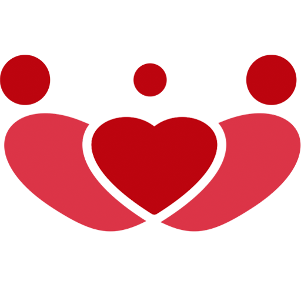

Cuidamos da sua saúde de forma integral, acompanhando desde pequenas queixas até a prevenção e o controle de doenças crônicas. Ideal para quem busca atenção contínua e personalizada.
AGENDAR

Sobre a Clínica
Há 30 anos, nascíamos em Barreiras - BA, oferecendo atendimento em Cardiologia. Com o passar do tempo, nossa família cresceu, e hoje, orgulhosamente, expandimos nossos cuidados para Luís Eduardo Magalhães, onde também oferecemos atendimento em Clínica Geral, Medicina de Família e Nutrição, além de exames cadiológicos


Nosso Time

Nossas Especialidades
Consulta Clínica - Médica de Família
Consulta Cardiológica
Avaliação completa do coração, indicada para acompanhamento de hipertensão, dores no peito, cansaço ou histórico familiar de doenças cardíacas.
Risco Cirúrgico
Avaliação cardiológica específica para liberar procedimentos cirúrgicos com segurança. Inclui consulta, exames e laudo médico.
Check-up Cardiológico
Conjunto de exames e avaliação clínica voltados à prevenção de doenças cardíacas. Ideal para quem deseja acompanhar a saúde do coração de forma preventiva.
AGENDARConsulta Ginecológica
Atendimento acolhedor, com foco em saúde da mulher, climatério, prevenção e exames ginecológicos.
AGENDARConsulta Nutricional
Acompanhamento com a nutricionista para promover hábitos saudáveis, controlar doenças e alcançar equilíbrio alimentar.
AGENDARConsulta em Medicina do Trabalho
Essa consulta é voltada para avaliação clínica de trabalhadores, com foco na prevenção de riscos ocupacionais e promoção da saúde no ambiente profissional. Atendimentos voltados a exames admissionais, demissionais, de retorno ao trabalho, entre outros.
AGENDAR
Vídeos

Onde Estamos?
Unidade LEM
Edifício Via Lajedo
Rua Piauí, nº 80 - Centro
Salas 27 e 28
(77) 98116-3466
Unidade Barreiras
Rua Sandra de Paula, nº 108,
Sandra Regina
(77) 3611-6217 | (77) 99904-2500